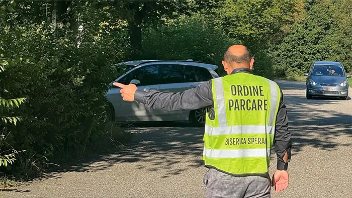
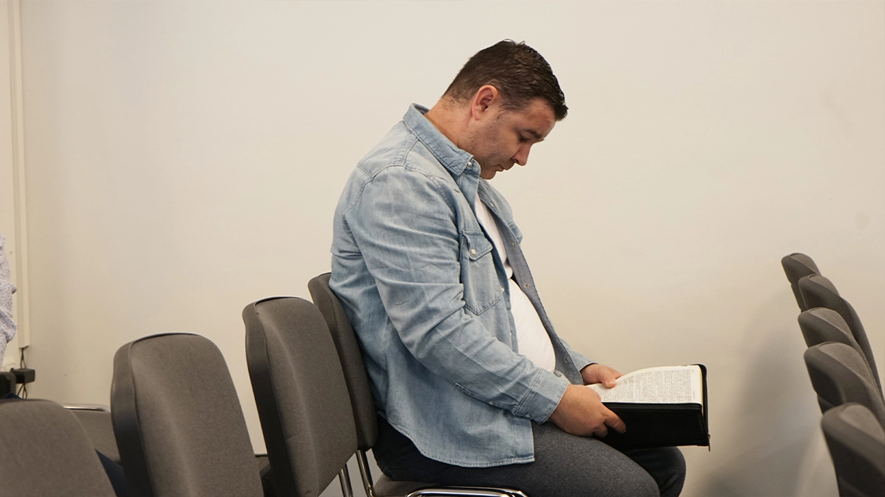
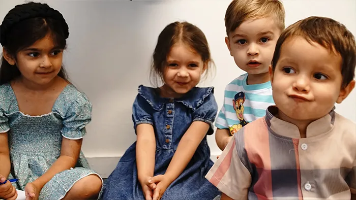
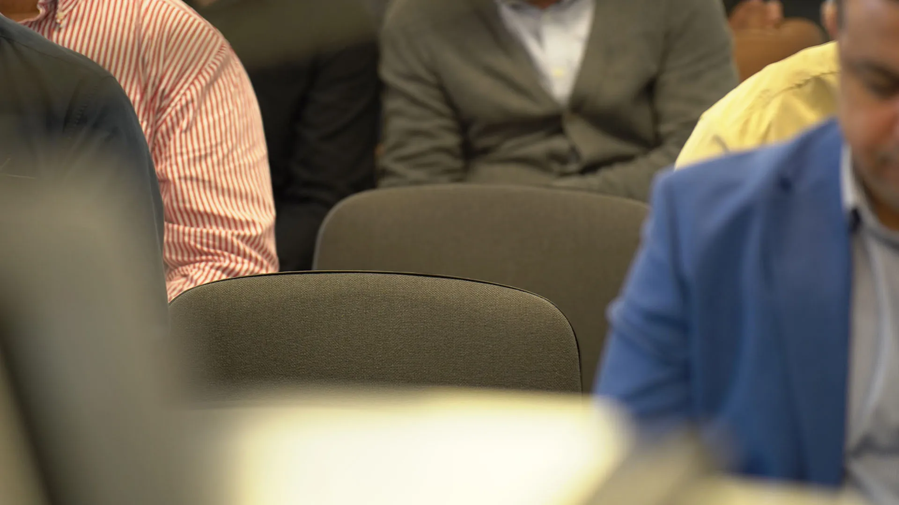

Abia așteptăm să te cunoaștem
Știm că atunci când ajungi într-un loc nou, primul gând e: „Unde parchez?”. La Speranța, avem voluntari prietenoși care te vor întâmpina încă din parcare și te vor ghida spre un loc liber cât mai aproape de intrare. Totul ca să poți intra relaxat și fără griji.

Te așteptăm la cele două servicii: dimineața de la ora 9:00 sau seara de la 18:00. Fiecare e diferit în felul lui, iar dacă vii puțin mai devreme, ne-am bucura să schimbăm câteva vorbe înainte să înceapă.
La Speranța nu impunem un anumit stil vestimentar, dar credem că decența este importantă. Vino într-un mod care te reprezintă și arată respect față de Dumnezeu și cei din jur.

Avem grijă de ei cu responsabilitate și dragoste, într-un mediu sigur și prietenos. Prin Școala Duminicală, cei mici învață despre Isus Christos într-un mod creativ, pe înțelesul lor, și se bucură de lecții biblice, jocuri și activități adaptate vârstei.

La Speranța, locul tău este pregătit din timp, ca să te simți binevenit de la primul pas. Tot ce trebuie să faci este să vii.

Dacă dorești să ne cunoști mai bine sau ai întrebări, completează formularul de mai jos. Echipa noastră îți va răspunde cu drag.
Întâlnirile noastre au loc în fiecare duminică de la orele 9:00 și 18:00. Vino să experimentezi închinarea, părtășia și Cuvântul lui Dumnezeu alături de noi.